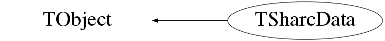

Function Members (Methods)
public:
| TSharcData() | |
| TSharcData(const TSharcData&) | |
| virtual | ~TSharcData() |
| void | TObject::AbstractMethod(const char* method) const |
| virtual void | TObject::AppendPad(Option_t* option = "") |
| virtual void | TObject::Browse(TBrowser* b) |
| static TClass* | Class() |
| virtual const char* | TObject::ClassName() const |
| virtual void | TObject::Clear(Option_t* = "") |
| void | ClearData() |
| virtual TObject* | TObject::Clone(const char* newname = "") const |
| virtual Int_t | TObject::Compare(const TObject* obj) const |
| virtual void | TObject::Copy(TObject& object) const |
| virtual void | TObject::Delete(Option_t* option = "")MENU |
| virtual Int_t | TObject::DistancetoPrimitive(Int_t px, Int_t py) |
| virtual void | TObject::Draw(Option_t* option = "") |
| virtual void | TObject::DrawClass() constMENU |
| virtual TObject* | TObject::DrawClone(Option_t* option = "") constMENU |
| virtual void | TObject::Dump() constMENU |
| virtual void | TObject::Error(const char* method, const char* msgfmt) const |
| virtual void | TObject::Execute(const char* method, const char* params, Int_t* error = 0) |
| virtual void | TObject::Execute(TMethod* method, TObjArray* params, Int_t* error = 0) |
| virtual void | TObject::ExecuteEvent(Int_t event, Int_t px, Int_t py) |
| virtual void | TObject::Fatal(const char* method, const char* msgfmt) const |
| virtual TObject* | TObject::FindObject(const char* name) const |
| virtual TObject* | TObject::FindObject(const TObject* obj) const |
| UShort_t | GetBack_ChannelId(const unsigned int& i) const |
| UInt_t | GetBack_Charge(const unsigned int& i) const |
| UShort_t | GetBack_DetectorNbr(const unsigned int& i) const |
| Double_t | GetBack_Energy(const unsigned int& i) const |
| Double_t | GetBack_EngChi2(const unsigned int& i) const |
| UShort_t | GetBack_StripNbr(const unsigned int& i) const |
| Double_t | GetBack_Time(const unsigned int& i) const |
| Double_t | GetBack_TimeCFD(const unsigned int& i) const |
| Double_t | GetBack_TimeLED(const unsigned int& i) const |
| vector<Int_t> | GetBack_Wave(const unsigned int& i) const |
| virtual Option_t* | TObject::GetDrawOption() const |
| static Long_t | TObject::GetDtorOnly() |
| UShort_t | GetFront_ChannelId(const unsigned int& i) const |
| UInt_t | GetFront_Charge(const unsigned int& i) const |
| UShort_t | GetFront_DetectorNbr(const unsigned int& i) const |
| Double_t | GetFront_Energy(const unsigned int& i) const |
| Double_t | GetFront_EngChi2(const unsigned int& i) const |
| UShort_t | GetFront_StripNbr(const unsigned int& i) const |
| Double_t | GetFront_Time(const unsigned int& i) const |
| Double_t | GetFront_TimeCFD(const unsigned int& i) const |
| Double_t | GetFront_TimeLED(const unsigned int& i) const |
| vector<Int_t> | GetFront_Wave(const unsigned int& i) const |
| virtual const char* | TObject::GetIconName() const |
| unsigned int | GetMultiplicityBack() const |
| unsigned int | GetMultiplicityFront() const |
| unsigned int | GetMultiplicityPAD() const |
| virtual const char* | TObject::GetName() const |
| virtual char* | TObject::GetObjectInfo(Int_t px, Int_t py) const |
| static Bool_t | TObject::GetObjectStat() |
| virtual Option_t* | TObject::GetOption() const |
| UShort_t | GetPAD_ChannelId(const unsigned int& i) const |
| Int_t | GetPAD_Charge(const int& i) const |
| UShort_t | GetPAD_DetectorNbr(const unsigned int& i) const |
| Double_t | GetPAD_Energy(const unsigned int& i) const |
| Double_t | GetPAD_EngChi2(const unsigned int& i) const |
| Double_t | GetPAD_Time(const unsigned int& i) const |
| Double_t | GetPAD_TimeCFD(const unsigned int& i) const |
| Double_t | GetPAD_TimeLED(const unsigned int& i) const |
| vector<Int_t> | GetPAD_Wave(const unsigned int& i) const |
| virtual const char* | TObject::GetTitle() const |
| virtual UInt_t | TObject::GetUniqueID() const |
| virtual Bool_t | TObject::HandleTimer(TTimer* timer) |
| virtual ULong_t | TObject::Hash() const |
| virtual void | TObject::Info(const char* method, const char* msgfmt) const |
| virtual Bool_t | TObject::InheritsFrom(const char* classname) const |
| virtual Bool_t | TObject::InheritsFrom(const TClass* cl) const |
| virtual void | TObject::Inspect() constMENU |
| void | TObject::InvertBit(UInt_t f) |
| virtual TClass* | IsA() const |
| virtual Bool_t | TObject::IsEqual(const TObject* obj) const |
| virtual Bool_t | TObject::IsFolder() const |
| Bool_t | TObject::IsOnHeap() const |
| static bool | IsSet() |
| virtual Bool_t | TObject::IsSortable() const |
| Bool_t | TObject::IsZombie() const |
| virtual void | TObject::ls(Option_t* option = "") const |
| void | TObject::MayNotUse(const char* method) const |
| virtual Bool_t | TObject::Notify() |
| void | TObject::Obsolete(const char* method, const char* asOfVers, const char* removedFromVers) const |
| static void | TObject::operator delete(void* ptr) |
| static void | TObject::operator delete(void* ptr, void* vp) |
| static void | TObject::operator delete[](void* ptr) |
| static void | TObject::operator delete[](void* ptr, void* vp) |
| void* | TObject::operator new(size_t sz) |
| void* | TObject::operator new(size_t sz, void* vp) |
| void* | TObject::operator new[](size_t sz) |
| void* | TObject::operator new[](size_t sz, void* vp) |
| TSharcData& | operator=(const TSharcData&) |
| virtual void | TObject::Paint(Option_t* option = "") |
| virtual void | TObject::Pop() |
| void | Print() |
| virtual Int_t | TObject::Read(const char* name) |
| virtual void | TObject::RecursiveRemove(TObject* obj) |
| void | TObject::ResetBit(UInt_t f) |
| virtual void | TObject::SaveAs(const char* filename = "", Option_t* option = "") constMENU |
| virtual void | TObject::SavePrimitive(ostream& out, Option_t* option = "") |
| static void | Set(bool flag = true) |
| void | SetBack(TFragment* frag, TChannel* channel, MNEMONIC* mnemonic) |
| void | SetBack(const UShort_t& DetNbr, const UShort_t& StripNbr, const Double_t& Energy, const Double_t& TimeCFD, const Double_t& TimeLED, const UShort_t& ChanId, const Double_t& Time = 0, const UInt_t& Charge = 0, const Double_t& ENGChi2 = -1.0) |
| void | SetBack_ChannelId(const UShort_t& ChanId) |
| void | SetBack_Charge(const UInt_t& Charge) |
| void | SetBack_DetectorNbr(const UShort_t& DetNbr) |
| void | SetBack_Energy(const Double_t& Energy) |
| void | SetBack_EngChi2(const Double_t& Chi2) |
| void | SetBack_StripNbr(const UShort_t& StripNbr) |
| void | SetBack_Time(const Double_t& Time) |
| void | SetBack_TimeCFD(const Double_t& TimeCFD) |
| void | SetBack_TimeLED(const Double_t& TimeLED) |
| void | SetBack_Wave(const vector<Int_t>& Wave) |
| void | TObject::SetBit(UInt_t f) |
| void | TObject::SetBit(UInt_t f, Bool_t set) |
| virtual void | TObject::SetDrawOption(Option_t* option = "")MENU |
| static void | TObject::SetDtorOnly(void* obj) |
| void | SetFront(TFragment* frag, TChannel* channel, MNEMONIC* mnemonic) |
| void | SetFront(const UShort_t& DetNbr, const UShort_t& StripNbr, const Double_t& Energy, const Double_t& TimeCFD, const Double_t& TimeLED, const UShort_t& ChanId, const Double_t& Time = 0, const UInt_t& Charge = 0, const Double_t& ENGChi2 = -1.0) |
| void | SetFront_ChannelId(const UShort_t& ChanId) |
| void | SetFront_Charge(const UInt_t& Charge) |
| void | SetFront_DetectorNbr(const UShort_t& DetNbr) |
| void | SetFront_Energy(const Double_t& Energy) |
| void | SetFront_EngChi2(const Double_t& Chi2) |
| void | SetFront_StripNbr(const UShort_t& StripNbr) |
| void | SetFront_Time(const Double_t& Time) |
| void | SetFront_TimeCFD(const Double_t& TimeCFD) |
| void | SetFront_TimeLED(const Double_t& TimeLED) |
| void | SetFront_Wave(const vector<Int_t>& Wave) |
| static void | TObject::SetObjectStat(Bool_t stat) |
| void | SetPAD(TFragment* frag, TChannel* channel, MNEMONIC* mnemonic) |
| void | SetPAD(const UShort_t& DetNbr, const Double_t& Energy, const Double_t& TimeCFD, const Double_t& TimeLED, const Double_t& Time = 0, const Int_t& Charge = 0) |
| void | SetPAD_ChannelId(const UShort_t& ChanId) |
| void | SetPAD_Charge(const Int_t& Charge) |
| void | SetPAD_DetectorNbr(const UShort_t& DetNbr) |
| void | SetPAD_Energy(const Double_t& Energy) |
| void | SetPAD_EngChi2(const Double_t& Chi2) |
| void | SetPAD_Time(const Double_t& Time) |
| void | SetPAD_TimeCFD(const Double_t& TimeCFD) |
| void | SetPAD_TimeLED(const Double_t& TimeLED) |
| void | SetPAD_Wave(const vector<Int_t>& Wave) |
| virtual void | TObject::SetUniqueID(UInt_t uid) |
| virtual void | ShowMembers(TMemberInspector&) |
| virtual void | Streamer(TBuffer&) |
| void | StreamerNVirtual(TBuffer& ClassDef_StreamerNVirtual_b) |
| virtual void | TObject::SysError(const char* method, const char* msgfmt) const |
| Bool_t | TObject::TestBit(UInt_t f) const |
| Int_t | TObject::TestBits(UInt_t f) const |
| virtual void | TObject::UseCurrentStyle() |
| virtual void | TObject::Warning(const char* method, const char* msgfmt) const |
| virtual Int_t | TObject::Write(const char* name = 0, Int_t option = 0, Int_t bufsize = 0) |
| virtual Int_t | TObject::Write(const char* name = 0, Int_t option = 0, Int_t bufsize = 0) const |
protected:
| virtual void | TObject::DoError(int level, const char* location, const char* fmt, va_list va) const |
| void | TObject::MakeZombie() |
Data Members
public:
| enum TObject::EStatusBits { | kCanDelete | |
| kMustCleanup | ||
| kObjInCanvas | ||
| kIsReferenced | ||
| kHasUUID | ||
| kCannotPick | ||
| kNoContextMenu | ||
| kInvalidObject | ||
| }; | ||
| enum TObject::[unnamed] { | kIsOnHeap | |
| kNotDeleted | ||
| kZombie | ||
| kBitMask | ||
| kSingleKey | ||
| kOverwrite | ||
| kWriteDelete | ||
| }; |
private:
| static bool | fIsSet | ! |
| vector<UShort_t> | fSharc_PAD_ChannelId | ! |
| vector<Int_t> | fSharc_PAD_Charge | ! |
| vector<UShort_t> | fSharc_PAD_DetectorNbr | ! |
| vector<Double_t> | fSharc_PAD_Energy | ! |
| vector<Double_t> | fSharc_PAD_EngChi2 | ! |
| vector<Double_t> | fSharc_PAD_Time | ! |
| vector<Double_t> | fSharc_PAD_TimeCFD | ! |
| vector<Double_t> | fSharc_PAD_TimeLED | ! |
| vector<std::vector<Int_t> > | fSharc_PAD_Wave | ! |
| vector<UShort_t> | fSharc_StripBack_ChannelId | |
| vector<UInt_t> | fSharc_StripBack_Charge | ! |
| vector<UShort_t> | fSharc_StripBack_DetectorNbr | ! |
| vector<Double_t> | fSharc_StripBack_Energy | ! |
| vector<Double_t> | fSharc_StripBack_EngChi2 | ! |
| vector<UShort_t> | fSharc_StripBack_StripNbr | ! |
| vector<Double_t> | fSharc_StripBack_Time | ! |
| vector<Double_t> | fSharc_StripBack_TimeCFD | ! |
| vector<Double_t> | fSharc_StripBack_TimeLED | ! |
| vector<std::vector<Int_t> > | fSharc_StripBack_Wave | ! |
| vector<UShort_t> | fSharc_StripFront_ChannelId | ! |
| vector<UInt_t> | fSharc_StripFront_Charge | ! |
| vector<UShort_t> | fSharc_StripFront_DetectorNbr | ! |
| vector<Double_t> | fSharc_StripFront_Energy | ! |
| vector<Double_t> | fSharc_StripFront_EngChi2 | ! |
| vector<UShort_t> | fSharc_StripFront_StripNbr | ! |
| vector<Double_t> | fSharc_StripFront_Time | ! |
| vector<Double_t> | fSharc_StripFront_TimeCFD | ! |
| vector<Double_t> | fSharc_StripFront_TimeLED | ! |
| vector<std::vector<Int_t> > | fSharc_StripFront_Wave | ! |
Class Charts
{kind=link}
{kind=link}
{kind=link}
{kind=link}

Function documentation
void ClearData()
void SetFront_DetectorNbr(const UShort_t& DetNbr)
SETTERS
{fSharc_StripFront_DetectorNbr.push_back(DetNbr);}void SetFront(const UShort_t& DetNbr, const UShort_t& StripNbr, const Double_t& Energy, const Double_t& TimeCFD, const Double_t& TimeLED, const UShort_t& ChanId, const Double_t& Time = 0, const UInt_t& Charge = 0, const Double_t& ENGChi2 = -1.0)
void SetBack(const UShort_t& DetNbr, const UShort_t& StripNbr, const Double_t& Energy, const Double_t& TimeCFD, const Double_t& TimeLED, const UShort_t& ChanId, const Double_t& Time = 0, const UInt_t& Charge = 0, const Double_t& ENGChi2 = -1.0)
void SetPAD(const UShort_t& DetNbr, const Double_t& Energy, const Double_t& TimeCFD, const Double_t& TimeLED, const Double_t& Time = 0, const Int_t& Charge = 0)
UShort_t GetFront_DetectorNbr(const unsigned int& i) const
i////////// GETTERS
{return fSharc_StripFront_DetectorNbr[i];}